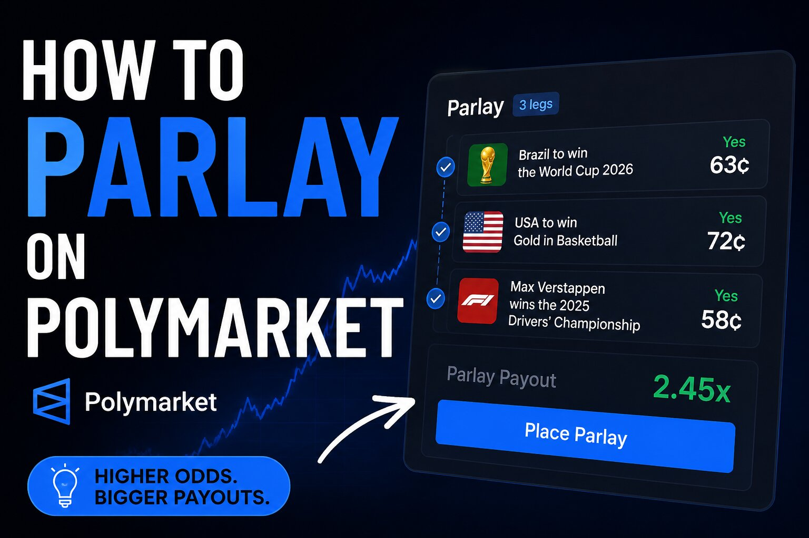

How to Parlay on Polymarket: Building Combos Step by Step

The short answer
Polymarket describes itself as a prediction exchange, not a sportsbook, so it's a fair question whether parlays even exist there. They do, just structured differently. Polymarket's sports section includes a Combo builder that lets you bundle multiple moneyline, spread, or total picks into a single trade that only pays out if every leg hits — functionally a parlay, priced through the same peer-to-peer order book as everything else on the platform rather than through house-set odds.
Combos vs. a sportsbook parlay: what's actually different
At a traditional sportsbook, a parlay's odds are set by the house, which builds in a margin on every leg and on the combination itself. On Polymarket, each leg you add to a Combo is priced off that market's live, trader-driven probability, and the combined contract pays out $1 if every leg resolves correctly or $0 if any single leg misses — same binary settlement logic as a standalone Polymarket contract, just with more conditions bundled into it. There's no bookmaker setting the number; the price you see reflects what other traders are willing to pay for that exact combination at that moment.
Building a Combo step by step
Head to Polymarket's Combos section, which currently covers major sports and esports categories including baseball, soccer, tennis, basketball, UFC, and titles like Counter-Strike, League of Legends, and Dota 2. Browse to a live or upcoming matchup and pick a leg — a moneyline side, a point spread, or an over/under total. Add a second leg from the same game or a different one; the builder tracks your selections and shows a running combined price as you go. Keep adding legs until you're happy with the combination, then confirm the trade. Polymarket will flag and remove any legs that logically conflict with each other — for instance, picking a team to win outright and also picking their opponent's spread in a way that can't both be true — before you're able to submit.
How the combined price behaves
Because each leg is drawn from a real order book rather than a fixed odds table, the combined price for a Combo moves as the underlying markets move — a late injury report, a lineup change, or in-game momentum can shift one leg's price and change what the whole bundle costs before you've committed to it. As a general rule, the more legs you stack and the less correlated they are, the lower the combined probability of hitting all of them, and the cheaper the combined contract gets — the same math that makes sportsbook parlays a long-shot bet dressed up as a single wager. Adding legs from the same game that are naturally correlated (a team winning and covering a modest spread, for example) behaves differently than combining unrelated games, since correlated outcomes tend to move together rather than acting as fully independent coin flips.
The other kind of "parlay": pre-built multi-condition contracts
Separate from the Combo builder, Polymarket also lists individual markets that resolve on more than one underlying condition by design — a single YES/NO contract that only pays out if several specific things all happen, bundled together by whoever created the market rather than assembled by the trader. These show up most often around loosely themed year-end or month-end questions covering a mix of political, financial, and cultural outcomes. Unlike a Combo you build yourself leg by leg, you can't edit or customize one of these — you're simply buying or selling YES or NO on a contract whose resolution already depends on multiple things going a specific way.
Fees and settlement
Combos settle the same way as any other Polymarket contract — automatically, based on the resolution of the underlying legs, with the position paying out $1 per share if every condition is met or $0 if any single one isn't. Fee treatment follows the same category-based structure as standalone markets: sports and esports legs can carry a taker fee depending on the specific market, while there's no separate "parlay fee" layered on top purely for combining picks into a bundle.
Before you build one
A Combo is a higher-variance position than any single leg in it, by construction — that's true of parlays anywhere, not something specific to Polymarket. Every additional leg lowers the probability of the whole thing hitting, even when each individual pick looks reasonable on its own. Treat a Combo the way you'd treat any long-shot structured bet: size it as a small, defined piece of your overall activity rather than a core strategy, and keep in mind that a single wrong leg among five correct ones still means the entire position resolves to zero.
Further reading on Polymarket
- Polymarket Combos — the live Combo builder, where you can browse eligible sports and esports markets and see real-time combined pricing as you add legs.
- Polymarket Terms of Service — eligibility, jurisdiction restrictions, and platform rules that apply to Combos as well as standalone markets.
Disclaimer: This post is for informational purposes only and is not financial, legal, or tax advice. Trading involves risk of loss, and combining multiple legs into a single position increases the chance the overall trade resolves to zero even when most individual legs are correct. Available Combo categories, fees, and features can change — confirm current details directly on polymarket.com before trading. 18+ only; restrictions and eligibility requirements apply and vary by jurisdiction.